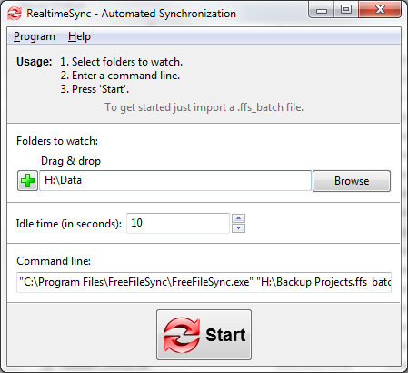

- Automated Synchronization -
RealtimeSync's primary function is to trigger synchronization immediately after files in a source directory have changed. However its implementation is more flexible to cover an even broader range of use: A list of directories provided by the user is monitored for changes. Whenever a file within these directories or sub directories is modified OR the directory becomes available (e. g. insert of a USB-stick), RealtimeSync responds by executing the user-specified command line.
Example: Real time synchronization - in combination with FreeFileSync
First start up RealtimeSync.exe located in FreeFileSync's installation directory. Then specify all directories that shall be monitored. Instead of doing this manually you can simply import a *.ffs_batch file via Menu -> File -> Load configuration. This not only extracts all directories relevant for synchronization but also sets up the command-line to execute the *.ffs_batch file each time changes are detected. Now press "Start" to begin monitoring.

Note: The
command-line should not block the progress. If a
FreeFileSync batch file is called make sure it is running
"minimized" and "error handling” is set to
"ignore errors" or "exit instantly". The
settings dialog can be skipped by passing a RealtimeSync
configuration file (*.ffs_real)
OR a FreeFileSync batch file (*.ffs_batch)
as first command-line argument to RealtimeSync.exe. This allows for
integration with the operating system's auto start
facility: Using
RealtimeSync is not restricted to starting FreeFileSync. It can
also be used in other scenarios, like sending an email whenever a
certain directory is modified. If
you schedule a Windows batch file (.bat, .cmd), see notes in Batch
Scripting.
"C:\Program
Files\FreeFileSync\RealtimeSync.exe"
"C:\MyConfig.ffs_real"
"C:\Program
Files\FreeFileSync\RealtimeSync.exe" "C:\SyncJob.ffs_batch"
Example: Automatic synchronization when USB stick is inserted
Save the relevant configuration on the USB stick's root directory to have it called when the stick is mounted. Then configure RealtimeSync as shown in the following:

Whenever directory "H:\Data" becomes available, the command line executes and starts the batch job on the stick. Additionally it also starts the batch job each time files are modified in "H:\Data".
Note:
The
name
of the last changed file is written to an environment variable
named "changed_file".
Example: Show names of changed files or directories. (Windows)
Show
which file or directory has triggered a change. Enter into command
line:
cmd /c echo
"%changed_file%" & pause
Write
a list of all changes to a logfile:
cmd
/c echo "%changed_file%" >> c:\log.txt
Limitations:
If multiple changes happen at the same time, only the name of the first file is written to variable "changed_file".
While RealtimeSync is executing the command line, monitoring is inactive and changes occurring during this time are lost.